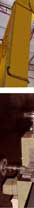
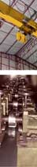
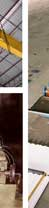

|
|
 |
ESTRUTURA FÍSICA Relação patrimonial de equipamentos e veículos. Uma das premissas de qualquer empresa é poder contar com equipamentos especiais e condições infra-estruturais que garantam a realização dos serviços, os quais se dispõe a prestar. A Fergel está sempre investindo em equipamentos e independência estrutural para poder realizar suas obras.

A infra-estrutura industrial é o patrimônio mais importante. Na lista abaixo, você pode checar o que estamos dizendo:
• Balança Rod. Tipo plataforma de 3m larg. e 16m comp. c/ capacidade de carga de 60 toneladas; • Compressor de ar W-84011h3/112 gal.175 psi; • Pórtico Rolante de 18 metros de vão útil (10 toneladas); • Perfiladeira PR 200 ST, marca Reggiane; • Prensa Hidráulica 60 ton.; • Dobradores p/ vergalhões; • Desbobinadores p/ vergalhões; • Estribadeira mec. Pneum. Autom. Mod. MT-P-12 c/ desbobinador; • Ponte Rolante com capacidade de carga de 5 ton. com 20 m de vão livre; • Máquina Mecânica Pneumática Automática MT-12 c/Desbobinador; • Máquina de estirar ferro de ¼; • Máquina de estirar ferro até 12,5 mm;
• Máquinas de corte e dobra de vergalhões; • Guilhotina Ondulada; • Perfiladeira de telhas trapezoidal; • Guilhotina Trapézio;
• Desbobinador Serie 0014/0175 • Guilhotina e Dobradeira p/ Cortar e Dobrar Chapas de espessura 8mm x 6m; • Caminhões: 5 (14 t); • Picapes: 4 Toyotas; • Veículos administrativos: 3.
|
|
Fergel Indústria e Comércio de Ferro e Aço da Amazônia Ltda. © 2006-2011 • Webdesign: Carlos Palácio |
|